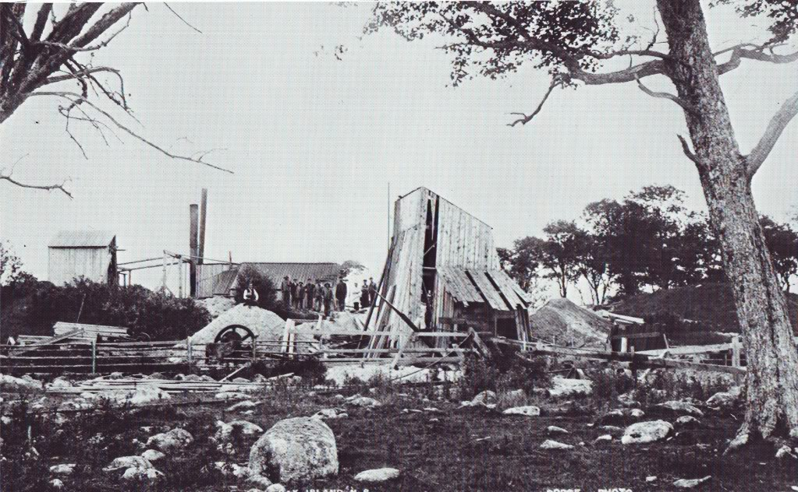

Installation de la Oak Island Treasure Company au Money Pit, cette année-là
Dans le Kansas, des gens pensent qu'un
mystérieux inventeur expérimente un "aéronef" à environ 10 miles à l'ouest d'une
petite ville. L'ovni tourna pendant quelques minutes puis s'éloigna vers le nord Semi-Weekly
Capital, 1897-03-31 < A Nebraskan Airship
Sighting - 1897.
On a vu la grande lumière luisante faire des tours pendant quelques minutes,
puis descendre à environ 200 pieds du sol, continuant à tourner alors qu'elle se déplaçait à une vitesse
remarquable pendant près de 2 miles puis se montrant faisant des cercles pendant 15 bonnes minutes, lorsqu'elle
commença à baisser et disparaître aussi mystérieusement qu'elle était apparue... On guette attentivement sa
réapparitionOmaha Daily
Bee, Nebraska, 2 février 1897 < A Nebraskan Airship
Sighting - 1897.
Dans le Nebraska, Plusieurs habitants de Hastings
rapportent qu'un aéronef, ou quelque de ce
type, a navigué dans les environs dans les airs à l'ouest de cette ville. Il fut remarqué pour la 1ère fois à un
moment de l'automne dernier lorsqu'il vu vu flottant dans l'air à environ 500 pieds au-dessus du sol, et après
s'être tenu immobile pendant une demi-heure, commença à décrire des cercles et prendre la direction du nord sur
2 miles environ, après quoi il revint à son point de départ et plonger dans l'oubli. Depuis cette époque il n'a
pas été vu jusqu'à dimanche soir, lorsqu'il vu observé se tenant immobile, à quelques miles à l'ouest de
Hastings et semblant à 800 pieds environ dans les airs. A première vue il avait l'apparence d'une étoile
immense, mais après une observation plus rapprochée la puissante lumière montra par sa couleur qu'elle était
artificielle. Il devait être éclairé par des dynamos électriques puissantes, la lumière émise en avant étant
merveilleuse Omaha Daily
Bee, 2 février 1897 < A Nebraskan Airship Sighting -
1897.
À Quebec City (Quebec), observation d'une étoile
mystérieuse Quebec (QU) Le Courrier de Canada, 1897-02-03, p. 4Montreal (PQ) Le Monde, 1897-02-04, p. 4Montreal (PQ) Le Monde, February 5, 1897, p. 4Montreal (PQ) Le Monde, February 8, 1897, p. 4 < Flood, Chuck: "Airships/Mystery Balloons from outside the US, 1896-98", 2007-12-07.
A Sherbrooke (Quebec), observation d'un ballon
élecriqueMontreal (PQ) Le Monde, 1897-02-08, p. 4 < Flood, Chuck: "Airships/Mystery Balloons from outside the US,
1896-98", 2007-12-07.
A Inavale, à environ 60 km au Sud de Hastings, une douzaine
de personnes qui reviennent de l'église sont survolées par un aéronef mystérieux de forme conique, d'une
longueur évaluée à 10 m environ. 2 paires d'ailes dépassent des flancs de l'engin qui se termine par un
gouvernail. Un projecteur est fixé à sa proue et on distingue 6 lumières plus petites. D'après les témoins, on
peut entendre comme des voix et des rires venant du ciel.
L'ovni est vu à nouveau à Invale, une minuscule ville fermière à 40 miles au sud de Hastings, près de la
frontière de l'état du Kansas, par des gens revenant d'une réunion de prière : Il semblait êq>e forme conique
et peut-être de 30 à 40 pieds de long, avec un phare brillant et 6 lumières plus petites, 3 sur un côté, et
semblait avoir 2 ensembles d'ailes sur un côté, avec un grand gouvernail en forme d'hélice. Les témoins de
Invale déclarent avoir entendu les bruits d'un moteur grondant et les voix des occupants de l'aéronefOmaha Daily
Bee, 1897-02-05 < A Nebraskan Airshio Sighting -
1897
Les rapports d'observations d'aéronefs recommencent à fleurir, mais, cette fois, pour
se concentrer sur le centre des États-Unis, entre le Texas et le Michigan.
A 22 km au nord de Sioux City (Iowa), Robert Hibbard (fermier) observe un "navire" aérien mais aussi une ancre pendant au
bout d'une corde attachée à l'engin qui l'attrape par ses vêtements et le traîne sur une distance de 6 ou 8
m avant de retomber à terre lorsque ses affaires se déchirent FSR 66, 4.
Au-dessus de San José (Californie), plusieurs témoins
observent une lumière blanche pâle se déplacer rapidement "Another Airship", Weekly
Republican de Fresno (Californie), 26 mars 1897.
Un fermier de l'Iowa rapporte avoir été accroché par l'ancre d'un vaisseau aérien "News of Iowa", Evening Gazette de Cedar Rapids (Iowa), 1897-03-29.
A Omaha (Nebraska), la majorité de la population
voit un objet arriver du sud-est. Il ressemble à une énorme source lumineuse, volant lentement vers le
nord-ouest, à basse altitude. La foule se rassemble au coin d'une rue pour l'observer 185.
A 5 versts de Ust'-Ishim (lieu de Russie en altitude
couvert de forêt de conifères), sur la rivière Irtysh, le bateau à vapeur Kaznakov (coentreprise
Kurbatov & Ignatov) suit depuis Omsk jusqu'à Tyumen' en passant par Tobol'sk lorsque le pilote, en poste sur
l'échelle, remarque du côté de la rive du fleuve un ballon flottant dans les airs et s'élevant de plus en plus
haut. Il le signale immédiatement au commandant et aux autres. Il se révèle que c'est vraiment le ballon, qui se
déplace de plus en plus au loin. Depuis la hauteur de son vol ce ballon semble pas plus que arshin in the
diamètre, et sous lui est suspendu une boule miniature. L'équipage du bateau l'observe pendant approximativement
1 h, et cela disparaît comîve;tement. Le ballon a-t-il volé au-dessus de la taiga dense de Tara ? Tobolskie
Gubernskie Vedomosti (Tobol'sk), 28 juin 1897 < Vostochnoe Obozrenie (Irkutsk), 23 juillet 1897, mais citant la date du 21 juin au lieu du 19 < Gershtein, Mikhail: "1897 Russian reports - part 1 (for Chuck)", Magonia
Exchange, 13 décembre 2007.
On propose que des pélicans puissent expliquer une observation de "vaisseau aériens" "Was It A Flock of Pelicans?", Weekly News
and Courier de Charleston (Caroline du Sud), 30 juin 1897.
A 30 versts au sud-ouest du village d'Aginskoye (près de Kansk, région
d'Irbeysky, Russie), à la frontière naturelle des "steppes d'Arbayskiye", alors la Lune s'élève juste au-dessus
de l'horizon, on observe soudain entre son bord supérieur et gauche une ombre suffisamment épaisse comme un
triangle équilateral avec une base petite, qui touche la Lune par son sommet. L'ombre dure 15 s, après quoi elle
commence à disparaître progressivement du milieu de la Lune vers son bord Yenisey de Krasnoyarsk, 17 août 1897 < Gershtein, Mikhail: "1897 Russian reports - part 1 (for Chuck)", Magonia
Exchange, 2007-12-13.
A Macon (Georgie), un
policier voit un vaisseau aérien "Swears He Saw It", Telegraph de Macon (Georgia), 1897-07-14.
A Tobolsk (Russie), par un temps complètement
clair et ensoleillé, ont remarque le vol d'un ballon au-dessus de la ville depuis l'ouest (au delà de la
rivirère Irtysh) jusqu'au nord-est (dans la direction des camps du bataillon local) Tobolskie Gubernskie Vedomosti de Tobol'sk, 19 juillet 1897 < Gershtein, Mikhail: "1897 Russian reports - part 1 (for Chuck)", Magonia
Exchange, 13 décembre 2007.
Près de Sidney (près de Victoria, Oregon?) 3 jeunes femmes voient pendant 30 mn un "vaisseau aérien" se
déplacer lentement vers le nord, sous forme d'une colonne de feu rouge d'apparemment 50 pieds de long "The Airship Again", Morning Oregonian de Portland (Oregon), 3 août 1897.
Près de Goldstream (Oregon?), 3 hommes voient un
vaisseau aérien, à l'apparence d'un ballon fortement éclairé et projetant des rayons, se déplacer vers le
nord-ouest jusqu'à disparaître au petit matin "The Airship Again",
Morning Oregonian de Portland (Oregon), 1897-08-03.
A Kholmogory (Russie), quand commence à peine
l'obscurité, 2 personnes remarquent qu'à l'horizon au sud émerge des nuages une lumière de la taille d'une
soucoupe à thé. Celle-ci descend, se cache derrière l'horizon, s'éleve vers le haut jusqu'aux nuages et
ainsi de suite. De tels mouvements continuent jusqu'à 20 fois pendant
approximativement. A ce moment un vent souffle en rafales et il devient alors possible de supposer qu'il
s'agissait de la lumière d'une lampe sur le ballon, qui sélectionnait une localité pour sa descente à terre
Arkhangel'skie Gubernskie Vedomosti de Arkhangel'sk, coupure de presse sans date exacte < Gershtein, Mikhail: "1897 Russian reports - part 1 (for Chuck)", Magonia
Exchange, 2007-12-14.
Près de Blagovezhensk (Russie), Survey of
the public life of Siberia. des résidents, which was at that time on the new settlement of Mr. Birshert (à 30
versts de Blagovezhensk), remarque à l'horizon un phénomène brillant, de forme ovale, qui vole du nord-ouest
vers l'est. Ils sont intéressés et commençent à faire une observation. Ils déclarent que l'objet avait une
couleur rouge, flew soon, que sa lumière sometimes grew dim et pendant le vol fit un rugissement dans les airs,
comme le rugissement que l'on peut entendre lorsque les ballons volent. Certains pensent qu'il s'agissait d'un
météore, d'autres supposent qu'il s'agissait du ballon inconnu de quelqu'un Yenisey de Krasnoyarsk, 26 septembre 1897 < Amurskaya gazeta < Gershtein, Mikhail: "1897 Russian reports - part 2 (for Chuck)", Magonia
Exchange, 14 décembre 2007.
Avez-vous vu la lumière dans le ciel ? Si tel n'est pas le cas, vous n'êtes pas à la mode. De nombreux
témoins l'ont vue planer au-dessus de Vancouver presque tous les soirs de cette semaine. On l'a aperçue pour
la dernière fois vendredi soir, on la reverra peut-être ce soir, ou peut-être pas. La nuit dernière, l'objet
mystérieux a été aperçu au nord de la ville ; il se dirigeait vers l'est. La boule de feu, ou l'aéronef pour
certains l'appellent, a été observé de près. Il s'est approché très rapidement, a fait une pause en l'air,
des lueurs colorées en ont jailli, puis il est reparti en direction du nord-est. Tantôt il ressemblait à une
boule de feu, tant son éclat se ternissait et de petites étincelles jaillissaient de sa masse
rougeoyanteDaily World de Vancouver,
Canada.
L'équipage d'un navire près de la Norvège voit un ballon aérien Bullard, Thomas E.: Mysteries
in the eye of the beholder, 1982, 226.
Au-dessus du village de Korsakovsk (Russie), sur la berge ouest de l'île de
Sakhalin, on voit voler un ballon clairement distinguable que l'on suppose être celui de Andree Nouvelle du 1er septembre à 06:10, obtenue à Khabarovsk par courrier le 10 septembre < Russkoe
Slovo (Moscou), 12 septembre 1897 < Gershtein, Mikhail: "1897 Russian reports - part 2 (for Chuck)", Magonia
Exchange, 14 décembre 2007.
et A Yeniseisk (Russie), 2 déportés politiques, vivant au village d'Antsiferovskoye, signalent
à l'officier de police du quartier avoir vu le 3 pendant 3 mn un corps sombre en forme de boule dans les nuages,
de la taille apparente d'une pomme, qui se cacha ensuite parmi les nuages. Par analogie avec le vol du ballon de
Kolomiitzev, lorsqu'il s'éleva très haut, ils concluent qu'en toute probabilité un objet d'une telle forme et
taille dans les nuages devait être le ballon de Andree. Le phénomène est aussi vu par 2 paysans
d'Antsiferovskoye. Ici, à la ville, quelque chose de semblable a été vu par E. M. Vostrotina, mais la durée de
l'observation n'a pas dépassé 1 mn, et c'était, selon elle, le 2 septembre, pas le 3 Yenisey (Krasnoyarsk), 1897-09-14 < Gershtein, Mikhail: "1897 Russian reports - part 2 (for Chuck)", Magonia
Exchange, 14 décembre 2007"Rumours about Andree", Vostochnoe Obozrenie (Irkutsk), 1897-09-07.
Près de Rybinsk (Russie) lorsque paraissent les nouvelles
du ballon qu'a vu le déporté Hempel dans la province de Yenisey, la majorité des media doutent de cette
information. En réalité à ce moment on ne sait rien de vols quelconques, et la vision de Hempel ne semble
pouvoir être le ballon d'Andree puisque ce dernier à calculé que son ballon n'était capable de rester en l'air
que 34 jours. Il y a déjà des nouvelles du ballon qui a été vu près de Ustug. Le ballon a été vu illuminé par
une lampe électrique. Ceci fait réfléchir. Au regard de la nouvelle confirmation de la 1ère rumeur à
propos d'une sphère brillante, je considère nécessaire de proclamer qu'une personne m'étant bien familière et
méritant une confiance totale a vu le phénomène, comme celui qu'a vu Hempel en août, mais la nuit du 5 au 6
September, à 30 versts de Rybinsk. Tout d'abord, selon lui, de derrière l'horizon apparut un point brillant en
forme de boule de couleur crimson, puis cela a commencé à s'élever, diminuant continuellement de taille, et
brillant maintenant déjà comme une lampe électrique. Finalement la sphère brillante vole vers le nord-est et
derrière les nuages. S'agissait-il du même phénomène que celui vu en Sibérie et à Ustug, et si c'est le même,
qu'est-il ? A cette époque les forces militaires ne lancent pas leurs ballons, et de plus ils ne peuvent voler
un mois entier. Ce ne peut être un météore à cause de sa lenteur et sa direction de vol vers le haut... Le
témoin, à qui j'ai parlé, affirme que l'objet brillant a vraiment produit impression du ballon avec électricité
brillant dans la gondole. Il lui sembla que la lumière se renforça, puis s'affaiblit et ainsi de suite, comme si
quelqu'un l'ajustait. La séquence d'observations de sphère brillante dans le ciel a forcé a supposer qu'il
s'agissait du même objet, qui vola au-dessus de Yeniseisk en août, le 6 septembre - au-dessus de Rybinsk et
finalement récemment - au-dessus de Ustug. Cependant, qu'est-il ? Et s'il s'agit d'un ballon, quel ballon est-ce
et d'où s'est-il envolé, s'il n'appartient pas à Andre ?
N. On. [signature] "What the Balloon Is?", Novoe Vremya (Saint-Petersbourg), 1897-09-26 < Gershtein, Mikhail: "1897 Russian reports - part 3 (for Chuck)", Magonia
Exchange, 2007-12-15.
A Perm (Russie) dans la presse de
temps en temps pénètrent l'actualité des éléments sur l'apparition dans les différentes localités de notre
nord-est d'étranges sphères lumineuses dans le ciel, et il est involuntarily lead to the assumption: pourrait-il
s'agir du ballon d'Andree perdu et roamed dans l'espace aérien. Cela me force à compléter ces nouvelles par un
signalement qui, apparemment, n'est pas apparu dans la presse. Il a été fait par moi, lorsque j'étais à Perm',
par M. Kuvshinov, responsable général de bateaux à vapeur possédés par Lyubimov. Selon cette personne, des
greffiers du bureau principal de Lyubimov, la nuit du 7 septembre, fut un témoin oculaire du même phénomène, qui
fut signalé par des télégrammes depuis le village de Nikiforovskoye de la province de Yeniseisk (2 septembre) et
maintenant de Ustug. Marchant vers dans une des rues de Perm, les greffiers virent les
mouvements de la sphère vola lentement vers l'est. La sphere semblait avoir la taille apparente de la paume
d'une main et pendant son mouvement vit des zigzags notables. Cela fut visible pendant et
pendant tout ce temps elle brûla, selon l'expression des témoins, comme une chandelle, irradia comme de la
lumière électrique, puis se cacha derrière l'horizon. A côtés des greddiers susmentionnés, ce phénomène fut vu,
comme ils l'indiquèrent, par plus de 150 personnes qui marchaient et s'assemblèrent en cette occasion. A.
Charushin. [signature], Saint Petersbourg, 24 septembre 1897 Novoe Vremya (St.-Petersburg), 1897-09-26 < Gershtein, Mikhail: "1897 Russian reports - part 3 (for Chuck)", Magonia
Exchange, 15 décembre 2007.
A Linguy (Eure-et-Loir, France), de la foudre de boule devaste une maison
sans blesser ses occupants Flammarion, Camille: Les
caprices de la
foudre, 1905, pp. 24-25 < Fitzhugh Talman, Charles: "Unsolved
Mysteries of Light", The Charleston Daily Mail, 19 juillet 1931Flammarion, C.: L'Atmosphère et les grands phénomènes
de la Nature, p. 346, 1911.
Publication de La guerre des Mondes de Herbert George Wells.
Le comte Ferdinand von Zeppelin commence la construction de son 1er dirigeable, qu'il fera voler pour la
1ère fois en 1900.